SANCHI STUPA

Unearth one of the most religious centers of Buddhism at the Sanchi Stupa that houses relics of the Buddha. This famous historical place in India was built by Lord Asoka in the 3rd century B.C for Emperor Ashoka. The Dome of the Stupa signifies the wheel of law and this stupa is actually considered as a symbol of Buddha’s freedom the circle of life and death (Moksha). The four gateways of the Stupa have various scenes from the Jataka tales and stories of Buddha’s life.
Sanchi Stupa, Madhya Pradesh – Understanding the Life of Buddha Unearth one of the most religious centers of Buddhism at the Sanchi Stupa that houses relics of the Buddha. This famous historical place in India was built by Lord Asoka in the 3rd century B.C for Emperor Ashoka. The Dome of the Stupa signifies the wheel of law and this stupa is actually considered as a symbol of Buddha’s freedom the circle of life and death (Moksha). The four gateways of the Stupa have various scenes from the Jataka tales and stories of Buddha’s life.
Sanchi Stupa, also written Sanci, is a Buddhist complex, famous for its Great Stupa, on a hilltop at Sanchi Town in Raisen District of the State of Madhya Pradesh, India. It is located in 46 kilometres (29 mi) north-east of Bhopal, capital of Madhya Pradesh. The Great Stupa at Sanchi is one of the oldest stone structures in India[1] and was originally commissioned by the emperor Ashoka in the 3rd century BCE. Its nucleus was a simple hemispherical brick structure built over the relics of the Buddha. It was crowned by the chatra, a parasol-like structure symbolising high rank, which was intended to honour and shelter the relics. The original construction work of this stupa was overseen by Ashoka, whose wife Devi was the daughter of a merchant of nearby Vidisha. Sanchi was also her birthplace as well as the venue of her and Ashoka's wedding. In the 1st century BCE, four elaborately carved toranas (ornamental gateways) and a balustrade encircling the entire structure were added. The Sanchi Stupa built during Mauryan period was made of bricks. The complex flourished until the 11th century.
Sanchi is the center of a region with a number of stupas including Satdhara (17 km from Sanchi, 40 stupas, the Relics of Sariputra and Mahamoggallana, now enshrined in the new Vihara, were unearthed there), Morel Khurd (on a fortified hilltop with 60 stupas), Andher (17 km NE of Vidisha), Mawas, Sonari etc. all within a few miles of Sanchi.
Maurya Period
The "Great Stupa" (or "Stupa No1") at Sanchi is the oldest structure and was originally commissioned by the emperor Ashoka the Great of the Maurya Empire in the 3rd century BCE. Its nucleus was a hemispherical brick structure built over the relics of the Buddha, with a raised terrace encompassing its base, and a railing and stone umbrella on the summit, the chatra, a parasol-like structure symbolizing high rank. The original Stupa only had about half the diameter of today's stupa, which is the result of enlargement by the Sungas. It was covered in brick, in contrast to the stones that now cover it.
According to one version of the Mahavamsa, the Buddhist chronicle of Sri Lanka, Ashoka was closely connected to the region of Sanchi. When he was heir-apparent and was journeying as Viceroy to Ujjain, he is said to have halted at Vidisha (10 kilometers from Sanchi), and there married the daughter of a local banker. She was called Devi and later gave Ashoka two sons, Ujjeniya and Mahendra, and a daughter Sanghamitta. After Ashoka's accession, Mahendra headed a Buddhist mission, sent probably under the auspices of the Emperor, to Sri Lanka, and that before setting out to the island he visited his mother at Chetiyagiri near Vidisa, thought to be Sanchi. He was lodged there in a sumptuous vihdra or monastery, which she herself is said to have had erected.
Ashoka pillar
The Sanchi pillar capital of Ashoka as discovered (left), and simulation of original appearance (right). Flame palmettes and geese adorn the abacus. A pillar of finely polished sandstone, one of the Pillars of Ashoka, was also erected on the side of the main Torana gateway. The bottom part of the pillar still stands. The upper parts of the pillar are at the nearby Sanchi Archaeological Museum. The capital consists in four lions, which probably supported a Wheel of Law, as also suggested by later illustrations among the Sanchi reliefs. The pillar has an Ashokan inscription (Schism Edict) and an inscription in the ornamental Sankha Lipi from the Gupta period. The Ashokan inscription is engraved in early Brahmi characters. It is unfortunately much damaged, but the commands it contains appear to be the same as those recorded in the Sarnath and Kausambi edicts. It relates to the penalties for schism in the Buddhist sangha.
Shunga period
On the basis of Ashokavadana, it is presumed that the stupa may have been vandalized at one point sometime in the 2nd century BCE, an event some have related to the rise of the Shunga emperor Pushyamitra Shunga who overtook the Mauryan Empire as an army general. It has been suggested that Pushyamitra may have destroyed the original stupa, and his son Agnimitra rebuilt it. The original brick stupa was covered with stone during the Shunga period.
Given the rather decentralized and fragmentary nature of the Shunga state, with many cities actually issuing their own coinage, as well as the relative dislike of the Shungas for Buddhism, some authors argue that the constructions of that period in Sanchi cannot really be called "Shunga". They were not the result of royal sponsorship, in contrast with what happened during the Mauryas, and most of the dedications at Sanchi were private or collective, rather than the result of royal patronage.
The style of the Shunga period decorations at Sanchi bear a close similarity to those of Bharhut, as well as the peripheral balustrades at the Mahabodhi Temple in Bodh Gaya.
The Great Stupa under the Sungas. The Sungas nearly doubled the diameter of the initial stupa, encasing it in stone, and built a balustrade and a railing around it.
Great Stupa
During the later rule of the Shunga, the stupa was expanded with stone slabs to almost twice its original size. The dome was flattened near the top and crowned by three superimposed parasols within a square railing. With its many tiers it was a symbol of the dharma, the Wheel of the Law. The dome was set on a high circular drum meant for circumambulation, which could be accessed via a double staircase. A second stone pathway at ground level was enclosed by a stone balustrade. The railings around Stupa 1 do not have artistic reliefs. These are only slabs, with some dedicatory inscriptions. These elements are dated to circa 150 BCE, or 175-125 BCE. Although the railings are made up of stone, they are copied from a wooden prototype, and as John Marshall has observed the joints between the coping stones have been cut at a slant, as wood is naturally cut, and not vertically as stone should be cut. Besides the short records of the donors written on the railings in Brahmi script, there are two later inscriptions on the railings added during the time of the Gupta Period. Some reliefs are visible on the stairway balustrade, but they are probably slightly later than those at Stupa No2, and are dated to 125-100 BCE. Some authors consider that these reliefs, rather crude and without obvious Buddhist connotations, are the oldest reliefs of all Sanchi, slightly older even than the reliefs of Sanchi Stupa No.2.
Interesting fact: The relics of Buddha were painted with a Mauryan polish to make them glow like glass.
Entry fee: Indians- INR 10
Foreigners- INR 250
Open from: 8.30am-5pm
Must see: The Ashoka pillar has four lions and is designed in a Greco-Buddhist style. It is also the national emblem of India.
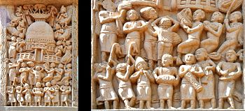
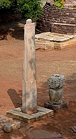
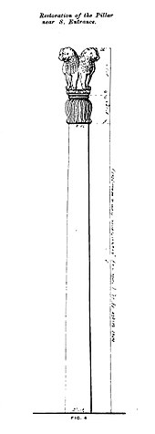

 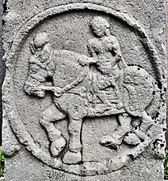
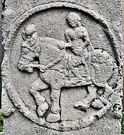
 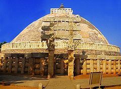
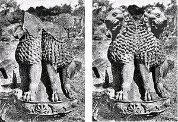
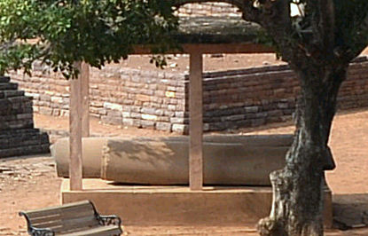
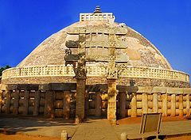
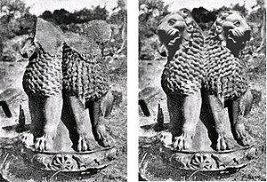
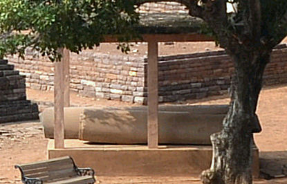
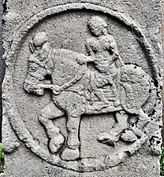
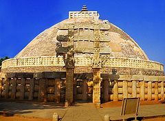
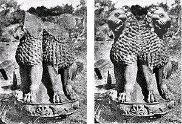
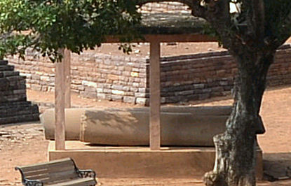
Developed By: Vineet Choudhary